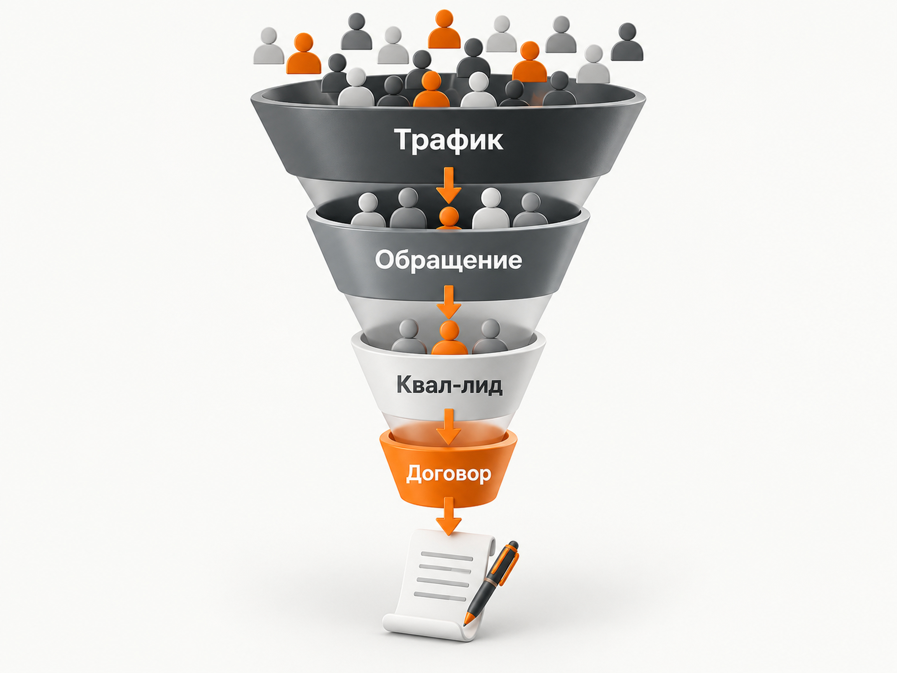

Блог о платном трафике
Продвижение внедрения и сопровождения 1С в 2026 году: инструкция и прогноз
Для продвижения услуг внедрения и сопровождения 1С в 2026 году я бы использовал Яндекс Директ для привлечения клиентов с уже сформированным спросом и SEO для постепенного расширения потока обращений. В рекламе важно разделять внедрение ERP, сопровождение действующих систем, доработки и переход с 1С:УПП. У этих направлений разные заказчики, сроки принятия решений и экономика.
По опубликованным кейсам стоимость квалифицированного лида может существенно отличаться. Для предварительного прогноза новой B2B-кампании я бы закладывал 12 000‑20 000 ₽ за квалифицированный лид. Это осторожная расчётная гипотеза, а не средняя цена по рынку.
Главный показатель продвижения 1С-интегратора - не количество заявок, а стоимость привлечения компании, которая действительно подходит под услуги подрядчика и способна заключить договор.
Какие услуги 1С нужно продвигать отдельно
Продвижение 1С лучше строить вокруг конкретных услуг, а не пытаться рекламировать всю деятельность интегратора одной кампанией.
Клиент, который ищет внедрение 1С:ERP для производственного предприятия, отличается от компании, которой нужен программист для небольшой доработки. Различаются требования, бюджеты, цикл сделки и критерии выбора подрядчика.
Я бы выделил четыре основных направления и отдельно учитывал более узкие услуги.
| Направление | Примеры запросов | Посадочная страница | Основное целевое действие |
|---|---|---|---|
| Внедрение 1С | внедрение 1с, внедрение 1с erp | Конфигурация, отрасль, этапы проекта | Запрос оценки внедрения |
| Сопровождение | сопровождение 1с, обслуживание 1с | Условия поддержки, SLA, конфигурации | Заявка на сопровождение |
| Разработка и доработка | программист 1с услуги, доработка 1с | Примеры задач и порядок выполнения | Обсуждение задачи |
| Переход с УПП | переход с упп на erp, замена 1с упп | Аудит, варианты миграции, сроки | Запрос оценки перехода |
Дополнительно я бы выделял интеграции с CRM, сайтами и складскими системами, настройку отдельных конфигураций, разовые технические задачи и продажу лицензий.
Смысл разделения не в том, чтобы создать максимально много кампаний. Сначала нужно разделить спрос и экономику. Количество рекламных кампаний определяется уже бюджетом и объёмом доступных конверсий.
Что показывают опубликованные кейсы рекламы 1С
В нише 1С встречаются квалифицированные лиды дешевле 10 000 ₽, но результаты отдельных проектов нельзя считать универсальным нормативом.
В сентябре 2025 года на Хабре опубликован кейс продвижения московского 1С-франчайзи. За два месяца агентство получило 38 обращений, из которых 16 признали квалифицированными.
Результаты по рекламным каналам были следующими.
| Канал | Средний CPC | Стоимость обращения | Стоимость квалифицированного лида |
|---|---|---|---|
| Поиск | 400 ₽ | 7000 ₽ | 10 000 ₽ |
| РСЯ и ретаргетинг | 38 ₽ | 10 000 ₽ | 15 000 ₽ |
| Мастер кампаний | 27 ₽ | 7000 ₽ | 12 000 ₽ |
Поиск обеспечил конверсию в обычное обращение 4,8%, а в квалифицированный лид - 3,6%. После теста авторы кейса решили сосредоточиться на Поиске и Мастере кампаний.
Это показательный пример: клик в РСЯ стоил значительно дешевле поискового, но квалифицированный лид обходился дороже.
Есть и другой профильный кейс, опубликованный в феврале 2026 года. Рекламировались решения интегратора для автоматизации бизнеса.
За период с января по ноябрь 2025 года авторы указали:
- Расходы на рекламу с НДС: 2 718 077 ₽.
- Все обращения: 624.
- Квалифицированные лиды: 347.
- Стоимость квалифицированного лида: 7835 ₽.
В этом проекте использовали разные посадочные страницы, отраслевые кейсы, вебинары и автоматические стратегии. При этом регулярно сталкивались со спамом и некачественными обращениями, поэтому отдельно работали с антифродом и квалификацией.
Из двух кейсов я бы сделал три вывода.
Первый: квалифицированный лид за 8000‑10 000 ₽ в этой тематике достижим, но не гарантирован.
Второй: стоимость клика и даже обычного обращения плохо отражает реальную экономику рекламы.
Третий: продвижение небольших задач по 1С нельзя оценивать по тем же KPI, что и внедрение сложной ERP-системы.
Поэтому для нового проекта я бы использовал опубликованные результаты как ориентиры, но не обещал повторить их без проверки спроса, сайта, региона и экономики услуг.

Кто принимает решение о выборе подрядчика 1С
В сложном внедрении 1С решение редко зависит от одного человека.
В выборе подрядчика могут участвовать генеральный директор, финансовый директор, главный бухгалтер, IT-директор, руководитель производства и сотрудники, которые будут работать с системой.
Поэтому посетитель, пришедший из Яндекса, не всегда подписывает договор. Нередко он собирает предложения и передаёт их руководству.
Для сайта это означает необходимость отвечать не только на технические вопросы, но и на коммерческие:
- Какую бизнес-проблему решает внедрение?
- Сколько времени потребуется?
- Как оцениваются работы?
- Каковы риски перехода?
- Кто отвечает за результат?
- Как будет организовано сопровождение?
Подробнее особенности такой воронки разобраны в статье про Яндекс Директ для B2B.
Каким должен быть сайт для продвижения услуг 1С
Сайт 1С-интегратора должен показывать не просто перечень услуг, а способность подрядчика решить конкретную задачу бизнеса.
Универсальная страница «Внедрение и сопровождение 1С» может использоваться как обзорная. Но для приоритетных коммерческих запросов лучше подготовить отдельные страницы.
Например:
- Внедрение 1С:ERP для производственных предприятий.
- Сопровождение и обслуживание 1С.
- Доработка 1С под задачи бизнеса.
- Интеграция 1С с CRM.
- Переход с 1С:УПП на 1С:ERP.
На каждой посадочной странице должны быть понятны специализация подрядчика, конфигурации, процесс работы, сроки оценки проекта и порядок формирования стоимости.
Для сопровождения особенно важны доступность специалистов, условия обслуживания, время реакции и состав работ.
Для внедрения ERP важнее архитектура проекта, опыт в соответствующей отрасли, квалификация команды и порядок перехода на новую систему.
Кейсы лучше показывать предметно. Например, какая система использовалась раньше, какие процессы автоматизировали, сколько сотрудников работает в системе и какие изменения произошли после внедрения.
Такая конкретика полезнее, чем общие обещания качественного обслуживания.
Какой призыв к действию использовать
Для дорогого внедрения я бы не ограничивался кнопкой «Заказать услугу».
Более подходящие варианты:
- Получить оценку проекта.
- Провести аудит действующей 1С.
- Обсудить задачу с экспертом.
- Рассчитать переход на 1С:ERP.
На первом контакте клиент часто ещё не знает точную стоимость и объём будущего проекта. Предложение получить предварительную оценку соответствует этому этапу принятия решения.
Как настроить Яндекс Директ для внедрения и сопровождения 1С
Начинать продвижение услуг 1С в Яндекс Директе я бы рекомендовал с Поиска, где пользователь уже выражает потребность в определённой услуге.
После накопления первых данных можно тестировать Мастер кампаний, ретаргетинг и РСЯ. Но оценивать их нужно по качеству обращений, а не по дешёвым кликам.
Поисковая реклама
Основой семантики становятся коммерческие запросы:
- внедрение 1с;
- заказать внедрение 1с;
- сопровождение 1с;
- обслуживание 1с;
- услуги программиста 1с;
- доработка 1с;
- внедрение 1с erp;
- переход с упп на erp;
- интеграция 1с с crm.
Следующий уровень - запросы с конкретными конфигурациями, отраслями и проблемами бизнеса.
Например, «внедрение 1с erp производство» значительно точнее указывает на потенциальную задачу, чем широкое «1с».
В нише нужно тщательно анализировать поисковые запросы. Пользователи могут искать вакансии, обучение, инструкции, скачивание программ, самостоятельное устранение ошибок и другие материалы, не связанные с покупкой услуг.
При этом не стоит автоматически исключать все информационные запросы. Некоторые из них могут отражать реальную проблему компании и быть полезными для отдельного теста. Главное - не смешивать их с горячими коммерческими запросами.
Мастер кампаний
Мастер кампаний стоит проверять как дополнительный инструмент.
В опубликованном кейсе московского франчайзи квалифицированный лид из Мастера кампаний обходился примерно в 12 000 ₽ против 10 000 ₽ на Поиске.
Это достаточно близкие результаты, чтобы рассматривать инструмент для тестирования.
Но я бы не объединял оценку Поиска и Мастера в одну статистику без разбивки по качеству обращений.
Особенно важно контролировать, какие направления продвигаются, какие аудитории приходят и сколько компаний проходят квалификацию.
Подробнее инструмент разобран в статье о Мастере кампаний.
РСЯ и ретаргетинг
РСЯ я бы рассматривал прежде всего как инструмент расширения охвата и возврата аудитории.
В нише внедрения 1С потенциальный клиент может изучать предложения несколько недель или месяцев. Поэтому имеет смысл возвращать посетителей, которые изучали услуги, кейсы и условия внедрения.
Перспективные сценарии:
- ретаргетинг посетителей страницы внедрения ERP;
- возврат пользователей, изучавших кейсы;
- продвижение аудита существующей системы;
- реклама отраслевых решений;
- напоминание о предложении после первого визита.
Но широкую РСЯ без данных по качеству лидов я бы не делал основным источником трафика.
В одном из опубликованных кейсов её стоимость клика была почти в десять раз ниже поисковой, а квалифицированный лид стоил дороже.
Это объясняет, почему для B2B-услуг сравнение каналов только по CPC практически бесполезно.
Какие объявления использовать в 2026 году
При настройке Единой перфоманс-кампании нужно учитывать переход Яндекс Директа на комбинаторные объявления.
С 30 июня 2026 года создание новых текстово-графических объявлений в ЕПК заменено использованием комбинаторных объявлений. С 14 июля Яндекс начал обновление существующих текстово-графических объявлений.
Для продвижения 1С я бы подготавливал несколько вариантов заголовков, текстов и изображений под конкретные услуги.
Например:
Внедрение 1С:ERP для производства
Подходит для компаний, которые выбирают систему управления производством.
Сопровождение 1С для бизнеса
Подходит для организаций, которым нужна регулярная техническая поддержка.
Переход с 1С:УПП на 1С:ERP
Подходит для компаний, которым необходимо оценить миграцию действующей системы.
Объявление должно соотв…1442 tokens truncated…ешение конкретной проблемы.
Например, пользователь может искать причину ошибки закрытия месяца, настройку интеграции, перенос данных или сравнение конфигураций.
Часть этих запросов имеет чисто информационный интент. Но среди пользователей могут быть компании, которым потребуется помощь специалиста.
Я бы строил SEO-структуру из трёх уровней.
Коммерческие страницы. Внедрение, сопровождение, доработка, интеграции и услуги по конкретным конфигурациям.
Отраслевые страницы. Автоматизация производства, торговли, строительства, логистики и других направлений, с которыми реально работает интегратор.
Информационные материалы. Инструкции, разборы проблем, сравнения продуктов, миграции, изменения законодательства и кейсы внедрения.
В опубликованном в августе 2026 года SEO-кейсе франчайзи 1С агентство сообщило о росте поискового трафика с 580 до 7800 визитов в месяц за 11 месяцев.
Количество запросов в топ-10 выросло с 38 до 538. Всего авторы указали 881 обращение из органики со средней расчётной стоимостью 1049 ₽.
Эта цифра представляет собой расходы на SEO, разделённые на количество зафиксированных обращений. Она не равнозначна рекламному CPL, не учитывает автоматически качество лидов и не гарантирует повторения результата другим интегратором.
Практический вывод: SEO помогает собирать спрос на разных этапах, но его экономику тоже нужно оценивать по обращениям и последующим договорам, а не только по посещаемости.
Переход с 1С:УПП как отдельное направление продвижения
Во второй половине 2026 года переход с 1С:УПП заслуживает самостоятельного продвижения.
Фирма «1С» официально сообщала о завершении основной поддержки конфигурации УПП в конце 2026 года.
В первом квартале 2027 года обновления предусмотрены только при необходимости подготовки отчётности за 2026 год. Поддержка законодательных изменений, вступающих в силу с января 2027 года, не планируется.
С 1 апреля 2027 года фирма «1С» прекращает консультационную поддержку пользователей этой конфигурации.
При этом окончание поддержки не означает, что установленная программа автоматически перестанет работать 1 января 2027 года.
Для действующих пользователей важнее оценить ограничения обновлений, совместимость, требования законодательства и риски дальнейшей эксплуатации системы.
Поэтому я бы продвигал не обещание срочного перехода любой ценой, а конкретную услугу оценки миграции.
Подходящие предложения:
- Аудит действующей 1С:УПП.
- Сравнение вариантов перехода.
- Оценка стоимости и сроков внедрения.
- Анализ переноса данных и доработок.
- Подготовка плана миграции.
Для такого спроса целесообразны отдельная посадочная страница, поисковая семантика и реклама. Смешивать его с общими запросами на внедрение 1С не стоит.
Сколько стоит лид на внедрение и сопровождение 1С
Единой рыночной стоимости заявки на услуги 1С нет. Она зависит от направления, географии, требований к клиенту, посадочной страницы и рекламной стратегии.
В опубликованных профильных кейсах встречаются квалифицированные лиды примерно по 7800‑15 000 ₽.
Но это результаты отдельных компаний с разной структурой услуг и разными условиями. Их нельзя автоматически переносить на новую рекламную кампанию.
Для предварительного медиаплана B2B-интегратора я бы использовал следующие расчётные допущения:
- Стоимость обычного обращения: 7000‑12 000 ₽.
- Стоимость квалифицированного лида: 12 000‑20 000 ₽.
Это осторожный прогноз для теста, а не норматив или обещание результата.
Сколько лидов можно получить при разных бюджетах
| Бюджет в месяц | Обычные обращения | Квалифицированные лиды |
|---|---|---|
| 150 000 ₽ | 12‑21 | 7‑12 |
| 300 000 ₽ | 25‑43 | 15‑25 |
| 500 000 ₽ | 42‑71 | 25‑42 |
Таблица показывает два независимых арифметических расчёта на основании разных диапазонов стоимости. В реальной воронке квалифицированные лиды являются частью всех обращений, поэтому итоговые значения должны проверяться совместно по фактической статистике.
Расходы в таблице относятся к размещению рекламы. Работы по созданию сайта, ведению кампаний, CRM и другие затраты сюда не включены. Учет НДС нужно согласовывать с методикой конкретного медиаплана.
Бюджет 150 000 ₽ я бы рассматривал как один из стартовых ориентиров для теста B2B-внедрения и сопровождения.
При меньших расходах запуск тоже возможен, особенно для локальных и узких услуг, но статистики может оказаться недостаточно для надёжных выводов.
При бюджете 300 000 ₽ ориентир 15‑25 квалифицированных лидов выглядит как расчётная гипотеза, которую нужно проверять в первые месяцы.
Как рассчитать стоимость привлечения клиента
Оценивать окупаемость рекламы 1С следует через стоимость заключённого договора, а не только через цену заявки.
Предположим, квалифицированные лиды превращаются в клиентов с конверсией 15%.
Это условный параметр для модели, а не средняя рыночная конверсия.
| Бюджет | Квалифицированные лиды | Потенциальные продажи при конверсии 15% |
|---|---|---|
| 150 000 ₽ | 7‑12 | около 1‑2 |
| 300 000 ₽ | 15‑25 | около 2‑4 |
| 500 000 ₽ | 25‑42 | около 4‑6 |
Количество договоров здесь обозначает расчётный результат соответствующей группы привлечённых лидов.
Для крупных внедрений сделка может закрыться спустя несколько месяцев после первого обращения. Поэтому нельзя считать, что все указанные продажи обязательно состоятся в месяц расходования рекламного бюджета.
Как определить допустимую цену квалифицированного лида
Формула:
Допустимый CQL = допустимый CAC × конверсия квалифицированного лида в клиента.
Предположим, компания готова тратить на получение одного договора до 120 000 ₽, а конверсия квалифицированных лидов в клиентов равна 15%.
Получаем:
120 000 × 0,15 = 18 000 ₽.
При таких условиях квалифицированный лид стоимостью 18 000 ₽ соответствует заданному ограничению на привлечение клиента.
Если допустимый CAC составляет 50 000 ₽, получим:
50 000 × 0,15 = 7500 ₽.
Тогда прогнозный CQL 12 000‑20 000 ₽ не укладывается в экономику.
Компания должна либо повышать конверсию в договор, либо снижать стоимость квалифицированного лида, либо пересматривать экономику рекламируемой услуги.
Важно, что допустимый CAC нужно рассчитывать не только из выручки, но и с учётом маржинальной прибыли и остальных расходов бизнеса.
Почему сопровождение меняет экономику клиента
Для интегратора стоимость первого договора не всегда равна полной ценности привлечённого клиента.
После внедрения могут появиться дополнительные работы, интеграции, обновления, расширение системы и регулярное сопровождение.
Поэтому стоимость привлечения клиента имеет смысл сравнивать с маржинальной прибылью за весь прогнозируемый период сотрудничества.
Но закладывать будущие работы в LTV без статистики неправильно.
Если компания располагает данными CRM, нужно посчитать долю клиентов, которые переходят на обслуживание, среднюю продолжительность договоров и маржинальную прибыль.
Только после этого можно обоснованно повышать допустимый рекламный CAC.
Для бизнеса, продающего разовые доработки, и интегратора, который получает долгосрочные контракты на сопровождение, допустимая стоимость привлечения клиента может существенно отличаться.
Как запускать продвижение 1С в первые три месяца
Первый месяц: структура и измерения
Я бы начал с определения приоритетных услуг и анализа спроса.
Основные задачи:
- Разделить услуги по коммерческому смыслу.
- Подготовить приоритетные посадочные страницы.
- Собрать поисковую семантику и исключить явно нерелевантные запросы.
- Настроить Метрику, звонки, формы и CRM.
- Согласовать критерии квалифицированного лида.
- Запустить рекламу на Поиске.
При ограниченном бюджете не стоит дробить кампании настолько, что каждая будет получать лишь единичные конверсии.
Второй месяц: качество обращений
Главная задача второго месяца - определить, какие направления и запросы приводят подходящие компании.
Я бы анализировал реальные поисковые запросы, причины нецелевых обращений и различия в качестве лидов.
После первых выводов можно тестировать Мастер кампаний и ретаргетинг.
Важно также начать передачу статусов из CRM, чтобы сравнивать рекламные источники не только по отправленным формам.
Третий месяц: оптимизация экономики
На третьем месяце уже можно принимать первые решения о перераспределении бюджета.
Нужно выделить услуги, которые получают квалифицированные обращения по приемлемой стоимости, и сократить расходы на явно слабые сегменты.
Параллельно стоит расширять коммерческую семантику и SEO-структуру сайта.
При достаточном числе подтверждённых целевых действий можно проверить более глубокую оптимизацию рекламных стратегий.
Но при длинном цикле сделки трёх месяцев может быть недостаточно для окончательной оценки CAC и окупаемости. Часть клиентов ещё будет находиться в переговорах.
Основные ошибки продвижения услуг 1С
Одна посадочная страница для всех услуг. Не позволяет точно отвечать на запросы компаний с разными задачами.
Смешивание небольших доработок и крупных внедрений. Искажает стоимость лидов и эффективность направлений.
Оценка рекламы только по CPC. Дешёвый клик не означает дешёвого квалифицированного клиента.
Недостаточный контроль поисковых запросов. В нише много учебного, кадрового и некоммерческого трафика.
Оптимизация по любым заявкам. Рекламная система не получает информации о том, какие обращения действительно ценны.
Отсутствие кейсов и отраслевой специализации. Для сложного B2B-внедрения доказательства компетенции подрядчика влияют на решение заказчика.
Слишком сильное дробление бюджета. Маленьким кампаниям не хватает статистики.
Отсутствие CRM-аналитики. Невозможно оценить стоимость договора и эффективность вложений.
Попытка считать окупаемость крупного внедрения за первый месяц. В сложных проектах продажи часто происходят значительно позже первичной заявки.
Итог: как продвигать услуги внедрения и сопровождения 1С
Для продвижения услуг 1С в 2026 году я бы использовал Яндекс Директ как основной управляемый источник платного трафика, а SEO - как долгосрочное направление привлечения клиентов.
На старте нужно разделить услуги по спросу и экономике, подготовить отдельные посадочные страницы и правильно настроить квалификацию лидов.
Поиск стоит использовать для сформированного коммерческого спроса. Мастер кампаний и РСЯ проверять дополнительно, сравнивая результаты по квалифицированным обращениям.
Для предварительного прогноза B2B-внедрения и сопровождения я бы заложил 12 000‑20 000 ₽ за квалифицированный лид. При бюджете 300 000 ₽ это соответствует расчётному ориентиру примерно 15‑25 квалифицированных лидов в месяц.
Но окончательное решение о масштабировании рекламы нужно принимать по реальной стоимости клиента, маржинальной прибыли и результатам CRM.
В сложном B2B важно оценивать всю воронку, а не только рекламный кабинет. Именно такую логику я использую в работе с платным трафиком. Пример подхода к продвижению дорогих услуг есть в моём кейсе B2B-консалтинга.